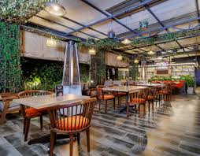

About Us
Our story, mission, and the team behind the magic
Our Story
Founded in 2025, Savory Delight began as a small family-owned restaurant with a simple mission: to bring people together through exceptional food and warm hospitality. What started as a dream in a modest kitchen has grown into a beloved dining destination known for its innovative cuisine and welcoming atmosphere.
Over the years, we've stayed true to our Kenyan roots while continuously evolving our menu to incorporate seasonal ingredients and contemporary culinary techniques. Every dish we serve tells a story of passion, dedication, and our commitment to excellence.
Our Mission
At Savory Delight, we believe that dining is more than just eating—it's an experience. Our mission is to create memorable moments for our guests by offering:
- Quality First: We source the finest local and sustainable ingredients to ensure every dish exceeds expectations.
- Culinary Innovation: Our chefs blend traditional techniques with modern creativity to craft unique and flavorful dishes.
- Exceptional Service: We treat every guest like family, providing attentive and personalized service.
- Community Focus: We're proud to support local farmers, suppliers, and community initiatives.
Meet Our Team
Chef Ryan Kangata
Executive Chef
With over 20 years of experience in fine dining, Chef Ryan brings creativity and precision to every dish. His passion for food began in his grandmother's kitchen and has taken him around the world.
Chef Raila Odinga
Pastry Chef
A graduate of BOMA, Raila specializes in creating stunning desserts that are as beautiful as they are delicious. His attention to detail is unmatched.
Cristiano Ronaldo
Restaurant Manager
Ronaldo ensures every guest has an exceptional experience. With his warm personality and meticulous attention to service, he leads our front-of-house team with excellence.
Lionel Messi
Sommelier
Lionel's expertise in wine pairing enhances every meal. His carefully curated wine list features selections from around the world, perfect for any palate.
Visit Us Today
We invite you to experience Savory Delight for yourself. Whether you're celebrating a special occasion or simply looking for a memorable meal, we're here to make your dining experience extraordinary.
Make a Reservation